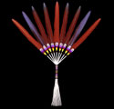

|  |
|
Barry Belindo |
Symbols of Faith and Belief: Art of the Native American Church
Now through September 17, 2000
U.S. Bank Gallery
In the late 1870s, a new religion emerged on the North American Great Plains. The new religion intertwined traditional Native American beliefs with Christianity and spawned a new artistic tradition. This exhibition explores the ways the Native American Church has helped Native peoples in developing and preserving their identity while assisting in their adjustment to new social, cultural and economic circumstances. A wide range of artistic techniques and media has evolved throughout the history of this religion to produce a distinctive genre of Native American art. The traditional expressive forms of beadwork, carving, metalsmithing and featherwork were combined to produce exquisite fans, rattles, drumsticks, jewelry, ritual staffs and other ceremonial objects used during the services of the Church. An understanding of the emergence of forms provides insight into the changing nature of American Indian life and art during the 20th century.
This exhibition has been organized by the Gilcrease Museum, Tulsa, Oklahoma with support from the Phillips Petroleum Company, Founders and Associates, Inc., and the State Arts Council of Oklahoma.